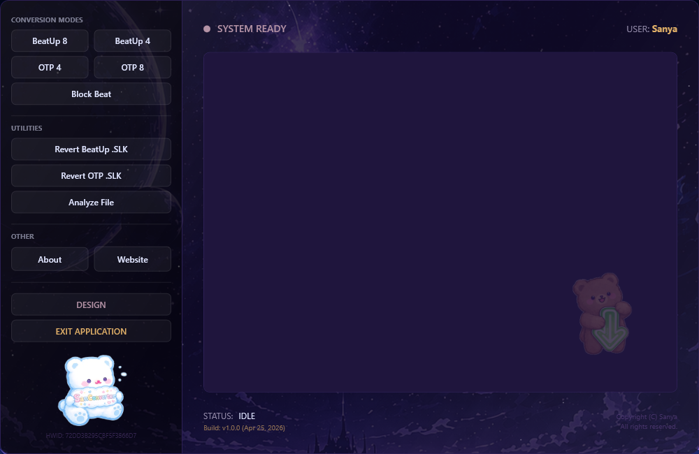

Official documentation and logic structure for the BeatUp Converter.
To get started, download the SanInstaller to your preferred directory and execute it. The installer will automatically retrieve and safely unpack the latest SanConverter deployment directly from GitHub.

.SM and .SSC files to .SLKThe biggest update yet, featuring an overhauled level calculator, new eye-care themes, and powerful SLK utilities.
n notes_fixed.slk file| Arrow Vortex Key | Beat Up .SLK Key | Comment |
|---|---|---|
| 1, 2, 3 | 7, 4, 1 | Specific Note assignment |
| 4, 5, 6 | 9, 6, 3 | Specific Note assignment |
| 7 | Random Key | removed in v1.0.2 |
| 1 + 7 | Random Key | Key Array {1,4,7}* (Left) |
| 2 + 7 | Random Key | Key Array {3,6,9}* (Right) |
| 8 | s | Space |
| M* | Finish Move | Shift + 8 (Mine on 8th Lane) |
| 7 + 8 | f | Finish Move without Space |
| n* + 7 + 8 | Note + Finish | Note Array {1,3,4,6,7,9} |
| n + M | Double Note (hidden) | M on lane 7 |
| n + M + M | Triple Note (hidden) | M on lane 7 & 8 |
n in the .slk which Audition can read, randomly generated using a no Jack-Logic.Lane 7 (index 6) acts as a state marker. If a hold/roll is active here, standard key assignments are overridden.
| State | Active Lane | Key Pool | Constraint |
|---|---|---|---|
2 (Hold) | Lane 1 (Left) | {7, 4, 1} | Max 2 jacks in a row |
2 (Hold) | Lane 2 (Right) | {9, 6, 3} | Max 2 jacks in a row |
2 (Hold) | Lane 1 + 2 | {7,4,1,9,6,3} | Max 2 jacks in a row |
4 (Roll) | Lane 1 (Left) | {7, 4, 1} | No direct repeat (no Jacks) |
4 (Roll) | Lane 2 (Right) | {9, 6, 3} | No direct repeat (no Jacks) |
3 (End) | — | Resets to BU8 | — |
| Arrow Vortex Key | Beat Up .SLK Key | Comment |
|---|---|---|
| 1 | n | Random Generated Note |
| 2 | s | Space |
| 3 | Random Left | Hold* |
| 3 | Random Left no Jacks | Roll* |
| 4 | Random Right | Hold |
| 4 | Random Right no Jacks | Roll |
| 3 + 4 | Random Left-Right | Hold 3+4 (Random Left-Right Pattern) |
| 3 + 4 | Random No Repeat | Roll 3+4 (Random no repeat Pattern) |
One-Two Party is a very sensitive gamemode, this converter supports all rules from charting lvl 1 to lvl 9.
| Arrow Vortex Key | OTP .SLK Key | Comment |
|---|---|---|
| 1 | n | Note |
| 2 | c | Change |
| 3 | d | Dance |
| 4 | s | Space |
| 1 + 2 + 3 + 4 | r | Rotation |
Fully supports all rules from charting lvl 1 to lvl 9.
| Arrow Vortex Key | OTP .SLK Key | Comment |
|---|---|---|
| 1 | n | Note |
| 2 | c | Change |
| 3 | s | Space |
| 4 | n | Note |
| 5 | c | Change |
| 6 | s | Space |
| 7 | d | Dance |
| 8 | r | Rotate |
The Converter features a powerful revert function. It accurately reverts all Audition BeatUp .slk and all Audition One-Two Party .slk files back into a clean Stepmania .SSC file, preserving patterns and BPM data.
This tool is free to download and use. Reverse engineering, decompiling, or redistributing modified versions of the executable is strictly prohibited.